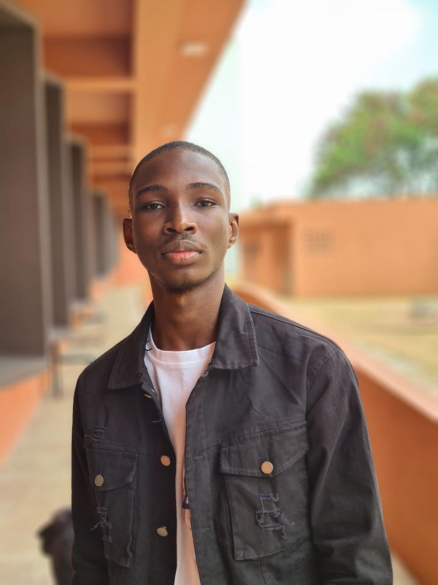

CONTACT
Calavi, Atlantique,
Bénin
kenneth.otchoumare@e
pitech.eu
69 66 32 32
@Kenneth OTCHOUMARE
PROFIL
PERSONNEL
Je suis étudiant en
informatique avec une
connaissance holistique en
programmation et
innovation informatique.Je
suis également expérimenté
dans la programmation
des jeux et en robotique.
CENTRES
D'INTÉRETS
- Jeux Vidéos
- Musique
- Natation
- Football
LANGUES
EXPERIENCES
PROFESSIONNELLES
Healthtech Challenge/Enabel Bénin
FEV 2021
Travail d'équipe
Epitech JAM/Epitech Bénin
FEV 2021
Travail d'équipe
Utilisation du langage SFML
EXPERIENCES
ASSOCIATIVES
Développeur/Delta Game Bénin
FEV 2021
COMPÉTENCES
Langage C, Python, Docker, HTML, CSS, Arduino, Shell,
SFML
Utilisation des logiciels informatiques Github, VsCode,
Gimp
DIPLOMES ET
FORMATIONS
Bachelor/Epitech Bénin
DEPUIS SEP 2020
Baccalauréat/CS La Grande Académie
SEP 2019 - JUL 2020